Margem de contribuição e custos do e-commerce
A margem de contribuição e os custos do ecommerce, no ERP da Olist, partem das vendas e separam o que entra como faturamento do que sai em frete, comissões, taxas e custo de compra. O resultado também aparece por canal de venda online.
Em Vendas > Margem Contribuição, você consulta a composição da margem, o índice do período e os recortes por canal, produto ou pedido. Em Vendas > Custos do e-commerce, você acompanha faturamento, frete e comissão de cada canal, revisa a configuração e monta o relatório de custos até a geração.
Importante
- O cálculo da margem é feito por mês e usa regime, base de custo e alíquotas sem e com substituição tributária.
- A configuração dos custos do ecommerce parte de situações de pedido já marcadas e de uma base de custo.
- Nenhum campo destas telas é obrigatório.
Instruções
Consultar a margem de contribuição
-
Acesse Vendas > Margem Contribuição.
-
Confira o período e a composição: faturamento, frete, custo adicional de frete, comissões, taxas, custos de compras, impostos, incentivos, créditos, adicionais, margem e índice.
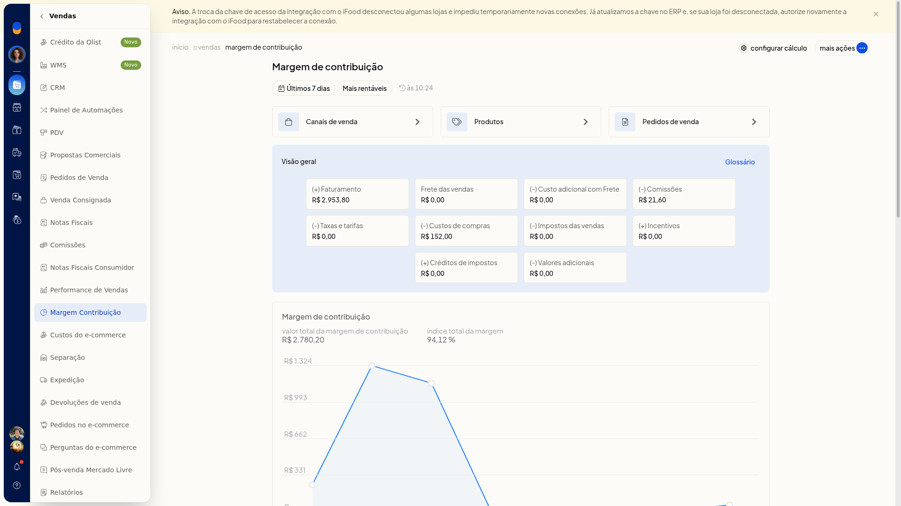
-
Clique em Canais, Produtos ou Pedidos e escolha Mais rentáveis ou Menos rentáveis para mudar o recorte.
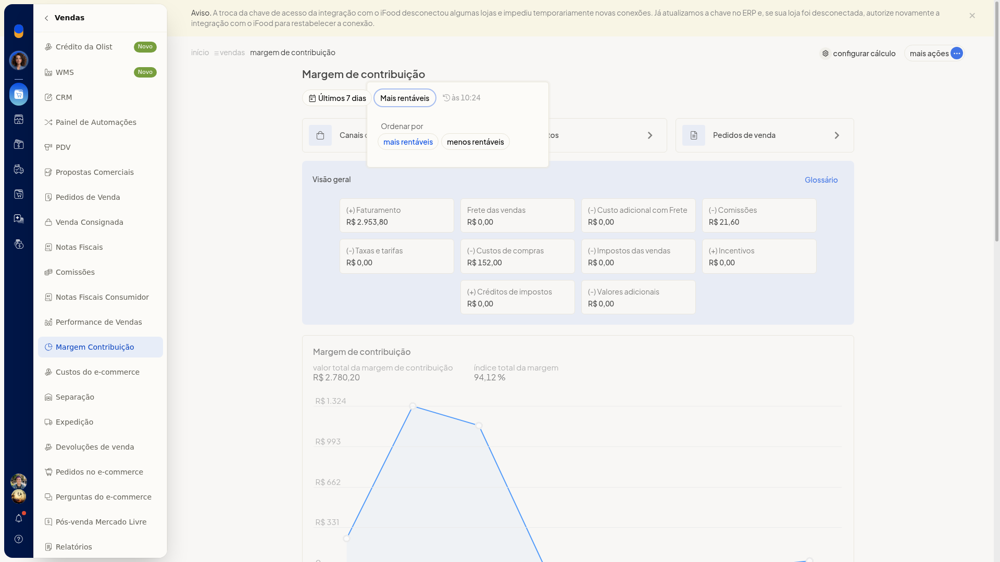
-
Abra o seletor de período e escolha Hoje, Ontem, Últimos 7 dias, Últimos 30 dias, Mês ou Período. Em Período, preencha De e Até no formato DD/MM/AAAA. Feche sem aplicar se quiser manter a consulta atual.
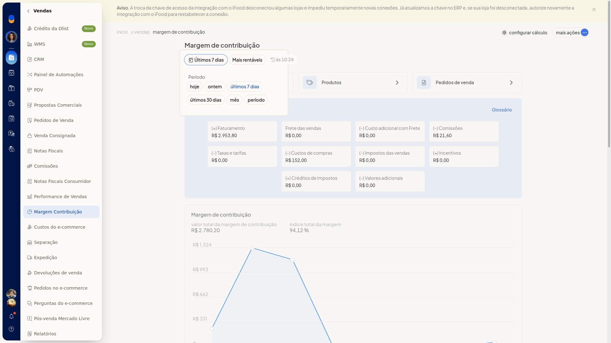
-
Abra o glossário, leia o significado dos indicadores e feche-o. A tela mostra a margem do período e o índice, no recorte de canal, produto ou pedido.
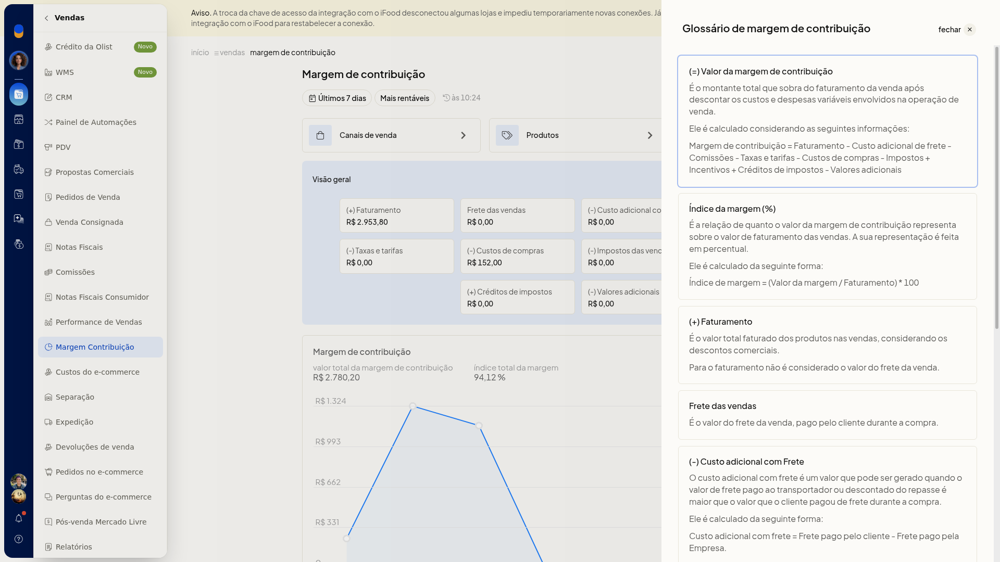
Configurar o cálculo da margem
-
Em Margem Contribuição, abra Mais ações e escolha configurar cálculo.
-
Confira as linhas mensais, o regime, as alíquotas sem e com substituição tributária e a indicação do último processamento.
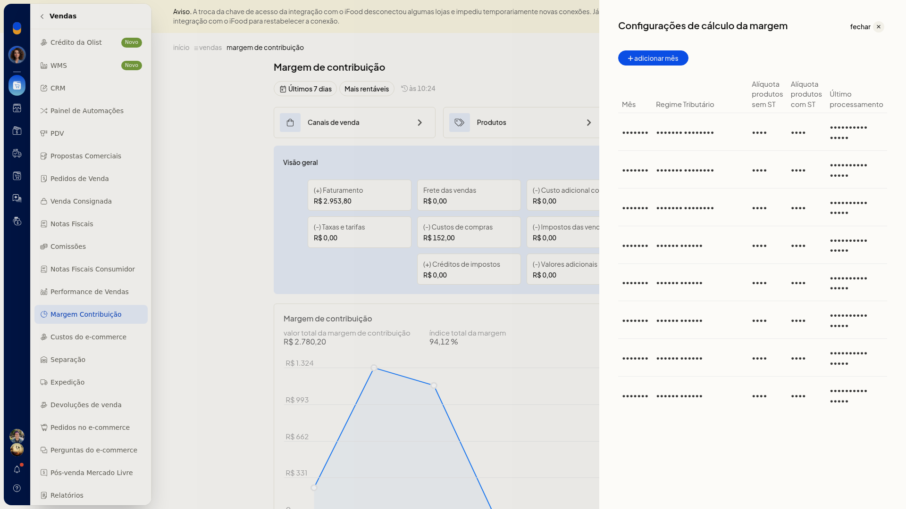
-
Abra adicionar mês e preencha o cálculo do mês.
Período e regime
- Em Mês, informe mês e ano, como 11/2026.
- Em Regime, escolha Simples nacional, excesso de sublimite, Regime normal ou MEI.
- Em Frete no cálculo, defina se o frete entra no cálculo.
Custo e naturezas
- Em Custo, escolha Custo da compra ou Custo médio.
- Em Naturezas, inclua naturezas somente se precisar.
- Marque Atualizar todos os dados e Recalcular vendas editadas se quiser essas opções.
Alíquotas
- Em Alíquota sem ST e Alíquota com ST, use percentual com vírgula decimal, como 6,50 ou 4,20.
-
Revise os dados. Para não alterar o cálculo, volte sem salvar ou recalcular.
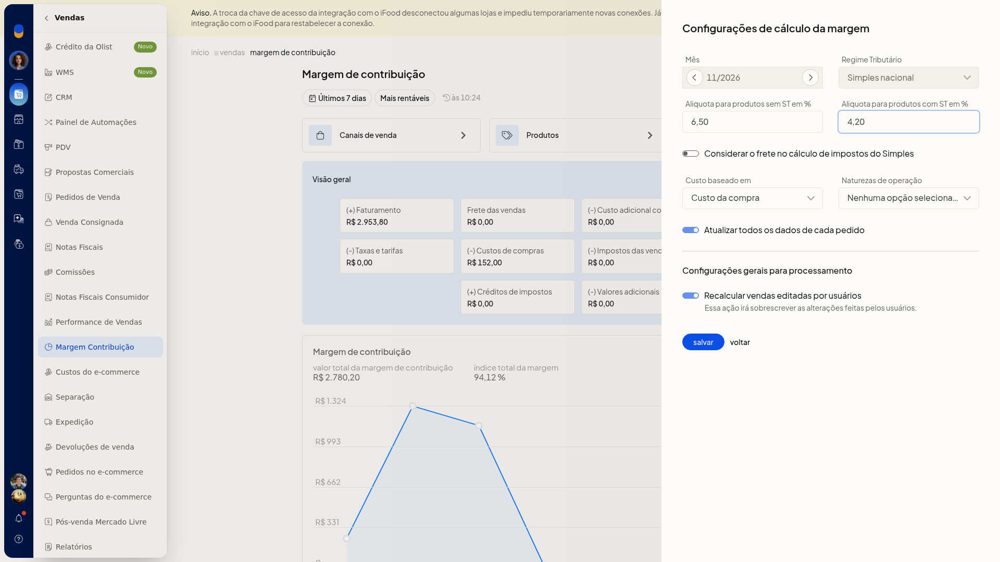
Consultar os custos do ecommerce
-
Acesse Vendas > Custos do e-commerce.
-
Confira o período, o faturamento, o frete do pedido, a comissão e os cartões de cada canal.
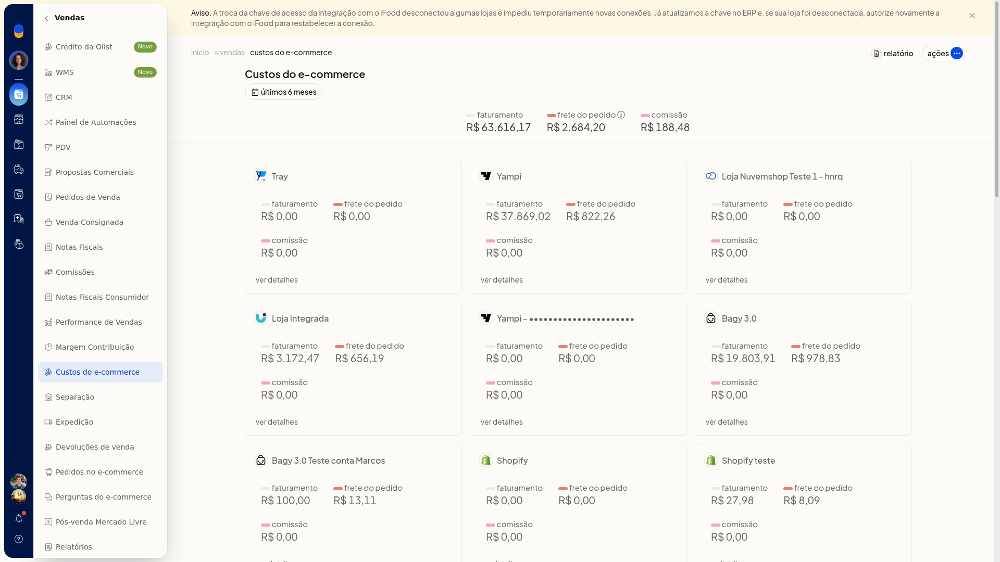
-
Abra ver detalhes de um canal para ver faturamento, diferencial de frete, comissão, custo total, incentivo, total líquido, quantidade e o gráfico do período.
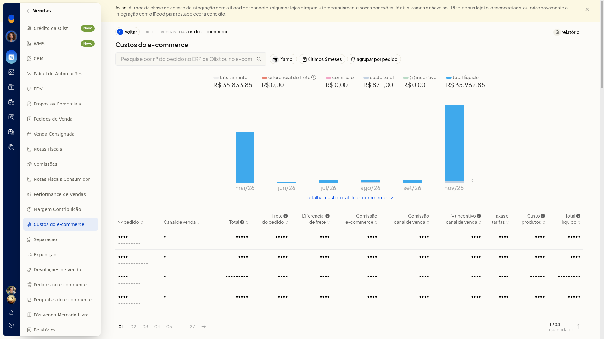
-
Abra detalhar custo total para ver também o frete do pedido e as comissões e taxas de ecommerce e marketplace. O agrupamento pode ser Pedido ou Produto. A tela mostra o custo e o líquido do canal.
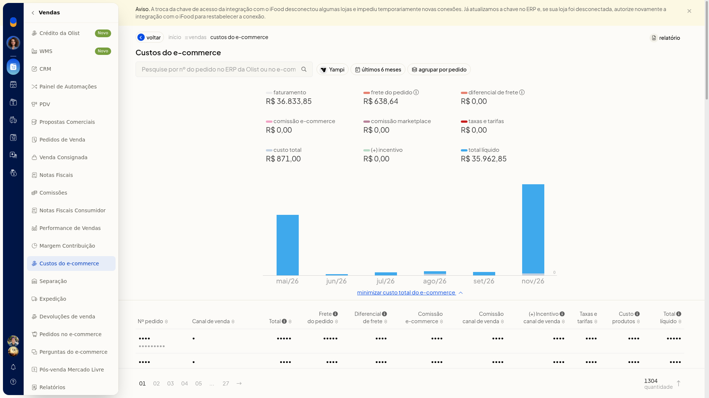
Configurar os custos do ecommerce
-
Em Custos do e-commerce, abra Ações e escolha Configurar.
-
Revise as situações de pedido já marcadas e a base de custo. Na base de custo, a opção Selecione também aparece.
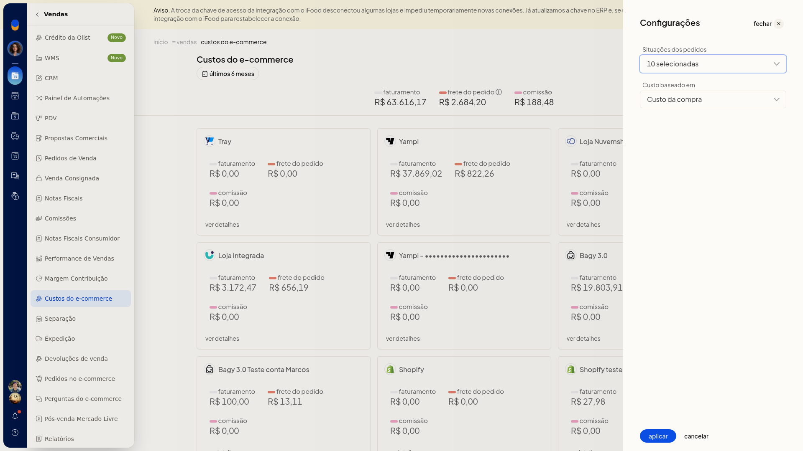
-
Clique em Cancelar para sair sem alterar a configuração.
Montar o relatório de custos do ecommerce
- Na tela de Custos do e-commerce, abra o formulário de relatório.
- Escolha Mês ou Intervalo e preencha o restante.
-
Em Mês, use mês e ano, como 11/2026. Em Intervalo, preencha De e Até no formato DD/MM/AAAA.
-
Informe Produto, se precisar.
-
Em E-commerce, selecione o canal.
-
Em Categoria, pesquise na árvore.
-
Em Agrupar por, escolha Pedido, E-commerce ou Produto.
-
Em Custo, escolha Não exibir, custo dos produtos ou última compra.
-
Em Situações, selecione as situações do pedido.
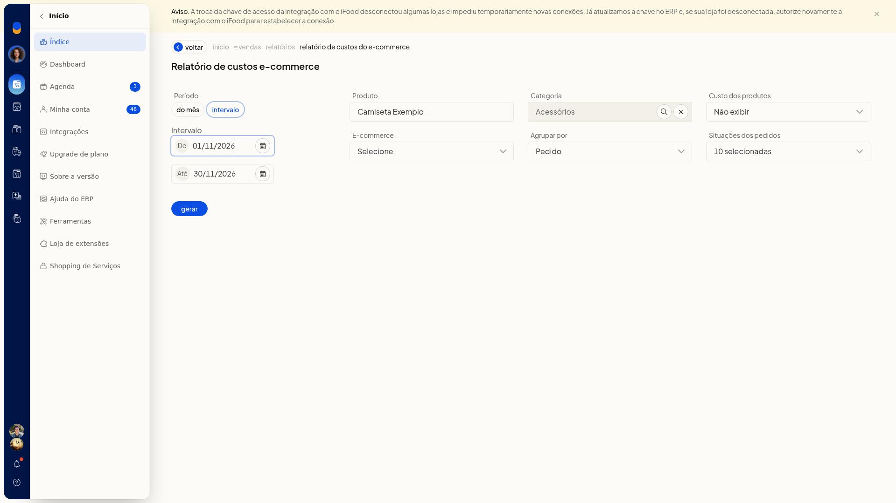
- Revise o formulário. A geração fica no botão Gerar.
Resultado
A margem de contribuição exibe a composição de entradas e deduções e o índice do período. Os custos do ecommerce exibem faturamento, frete do pedido e comissão, com o detalhe e o custo total de um canal. Os formulários de cálculo, configuração e relatório permanecem preenchidos até o botão de confirmação.
Informações adicionais
- No detalhe do custo total, não é preciso trocar o agrupamento entre Pedido e Produto para ler os totais.